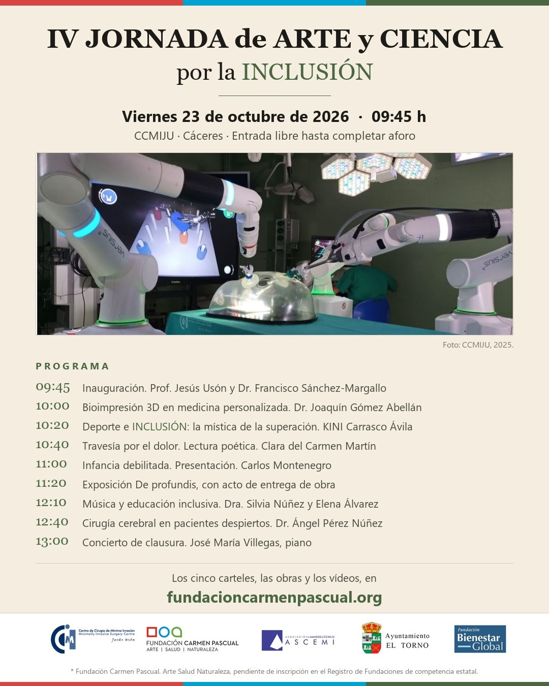

Viernes 23 de octubre de 2026 · 09:45 h
CCMIJU · Cáceres
Entrada libre hasta completar aforo
Ver el programa completo
Fundación Carmen Pascual. Arte Salud Naturaleza, pendiente de inscripción en el Registro de Fundaciones de competencia estatal.